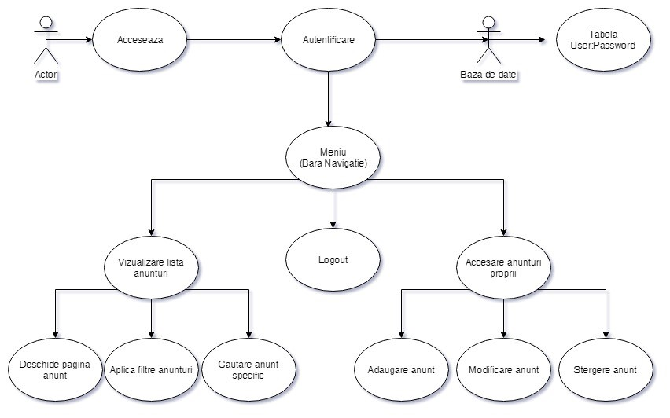

Raport Perfect Place
Autori
- Bîrzu Alexandra
- Iordache Viorel
- Teodorescu Alexandru
Organizatie afiliata
https://www.info.uaic.ro ( Facultatea de informatica, Iasi, Romania )Enuntul proiectului:
E necesara o aplicatie Web menita a gestiona eficient tranzactiile imobiliare. Sistemul va permite managementul unor imobile spre vanzare si/sau inchiriere, inclusiv informatii precum descriere, pret, coordonatele locatiei, date de contact, starea cladirii, facilitati oferite, riscuri posibile etc. Pentru localizarea facila, se va recurge la un serviciu de cartografiere (e.g., OpenStreetMap). In plus, se va oferi si posibilitatea atasarii de straturi suplimentare pentru vizualizarea unor informatii de interes -- e.g. diversele tipuri de poluare, nivelul de aglomeratie, numarul de raportari de jafuri, costul mediu de trai, temperatura medie anuala, existenta parcarilor ori altor obiective de interes (i.e. magazine) si altele. Pentru generarea diverselor straturi se poate recurge la date agregate existente in cadrul unor platforme sociale (e.g., Twitter, Facebook). De exemplu, pentru stratul poluare fonica, se pot agrega resurse marcate cu tag-ul "#noise" ori "#smog". Utilizatorii interesati de inchirierea/cumpararea unei locuinte (e.g. apartament, casa, loc de veci etc.) vor putea efectua diverse operatiuni folosind harta pusa la dispozitie: selectarea zonei de interes pentru afisarea optiunilor existente, selectarea diverselor straturi pentru luarea deciziei, filtrare in functie de alte criterii (e.g., pret, suprafata, facilitati). Funcționalitatea va fi expusa si sub forma unui serviciu Web. Optional, se poate utiliza Geolocation API pentru furnizarea de imobile aflate in vecinatatea utilizatorului.
P: Prototip al interfeţei Web (săptămâna #5)
- Prezentare:
- In saptamana a 5-a am prezentat interfata aplicatiei, compusa din urmatoarele ecrane:
- Home
- Lista anunturi
- Anunt individual
- Logare/Inregistrare
- Am luat in considerare lipsa ecranului "Adaugare anunt".
A: Arhitectura aplicaţiei Web (săptămâna #9)
- Prezentare:
- Am prezentat arhitectura de ansamblu a proiectului.
- Am prezentat flow-ul aplicatiei prin diagrama use-case 
- Am prezentat structura bazei de date:
- Ne-am propus sa folosim urmatoarele API-uri externe:
- Overleaf
- Open Street Map

S: Soluţia completă (în sesiune)
- Intre iteratia precedenta si cea curenta:
- Am refacut design-ul proiectului.
- Am refacut pagina de autentificare/logare.
- Am facut pagina de Adaugare Anunt care era lipsa.
- Prezentare:
- Am prezentat solutia finala a proiectului, ale carui functionalitati sunt descrise in Ghidul de utilizare al plicatiei.
Management cod sursa:
Codul sursa este disponibil pe Github la adresa:
github.com/iordacheviorel/TWManagement-ul codului nu a fost realizat exclusiv pe github. Am ales sa facem push in momentul in care era realizata o functionalitate stabila, distribuind cod-sursa in prealabil prin alte metode (ex: retele de socializare).